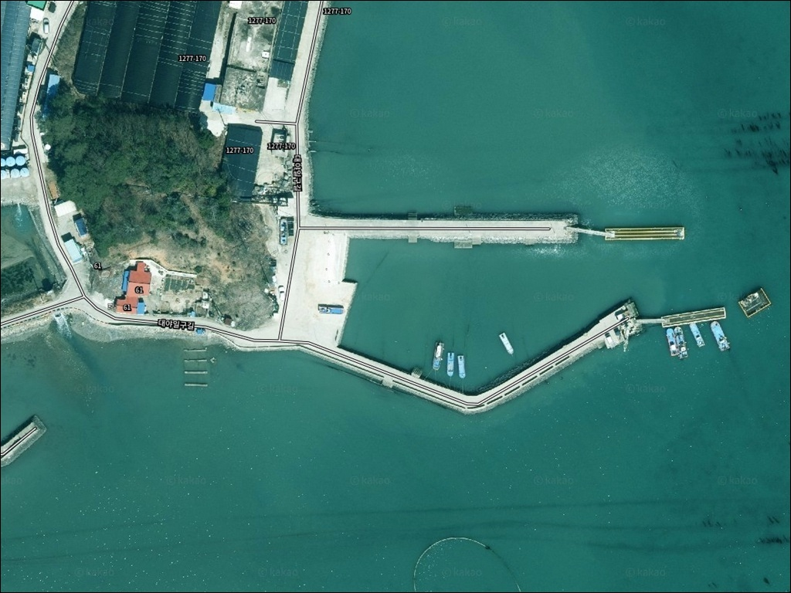
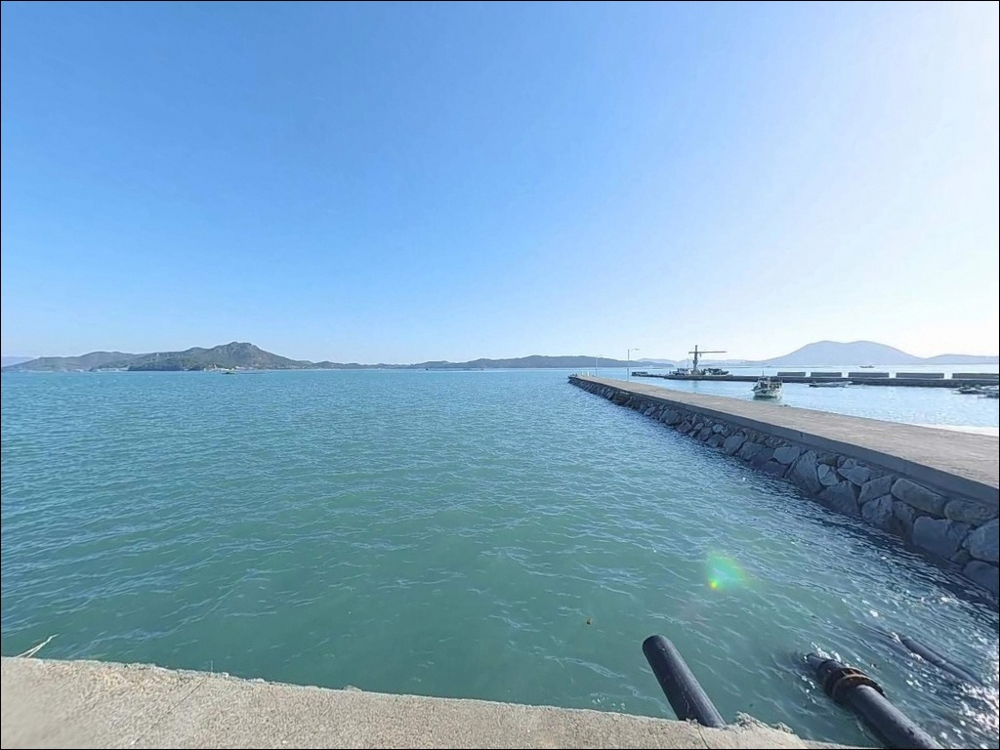
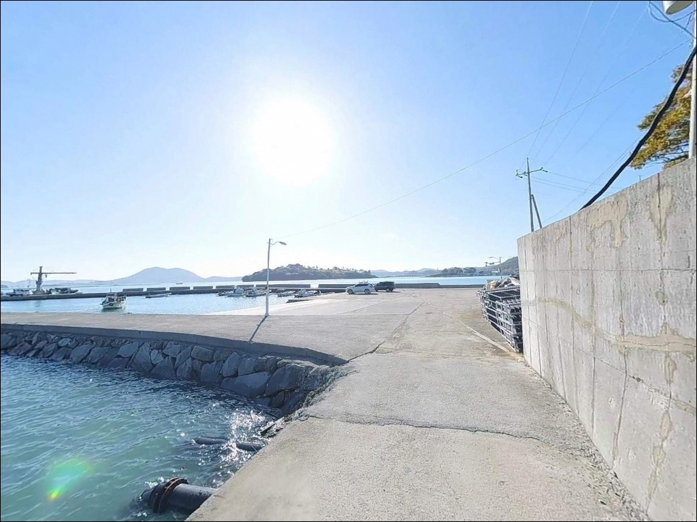
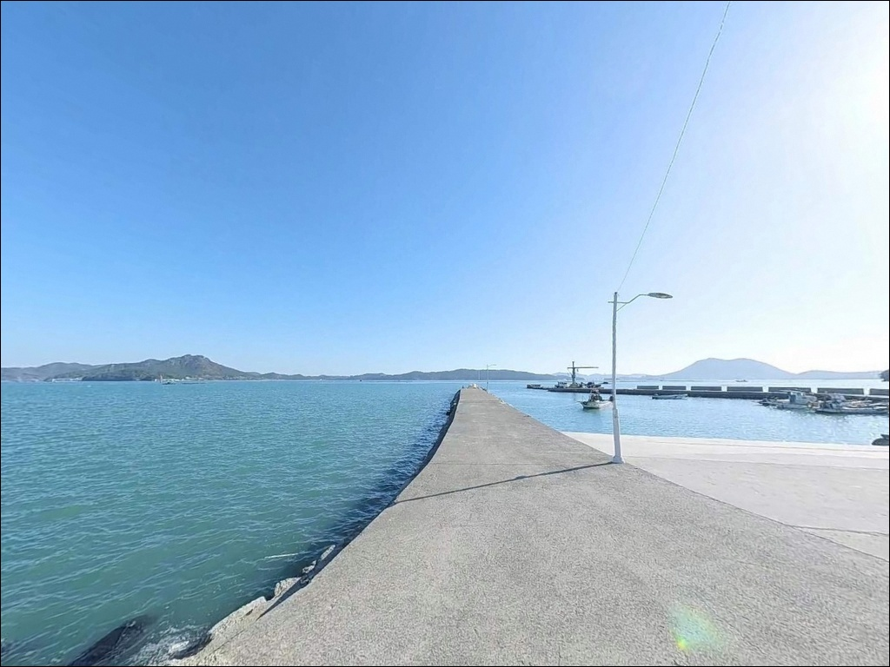
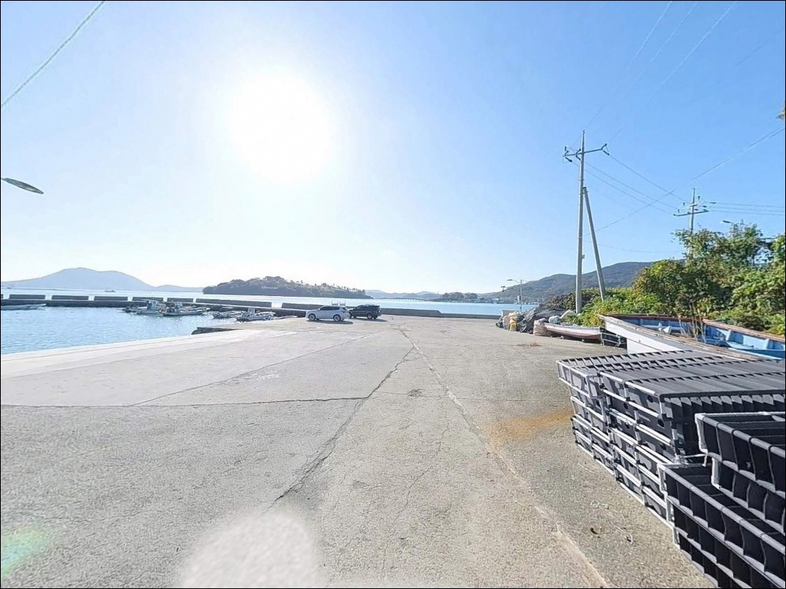
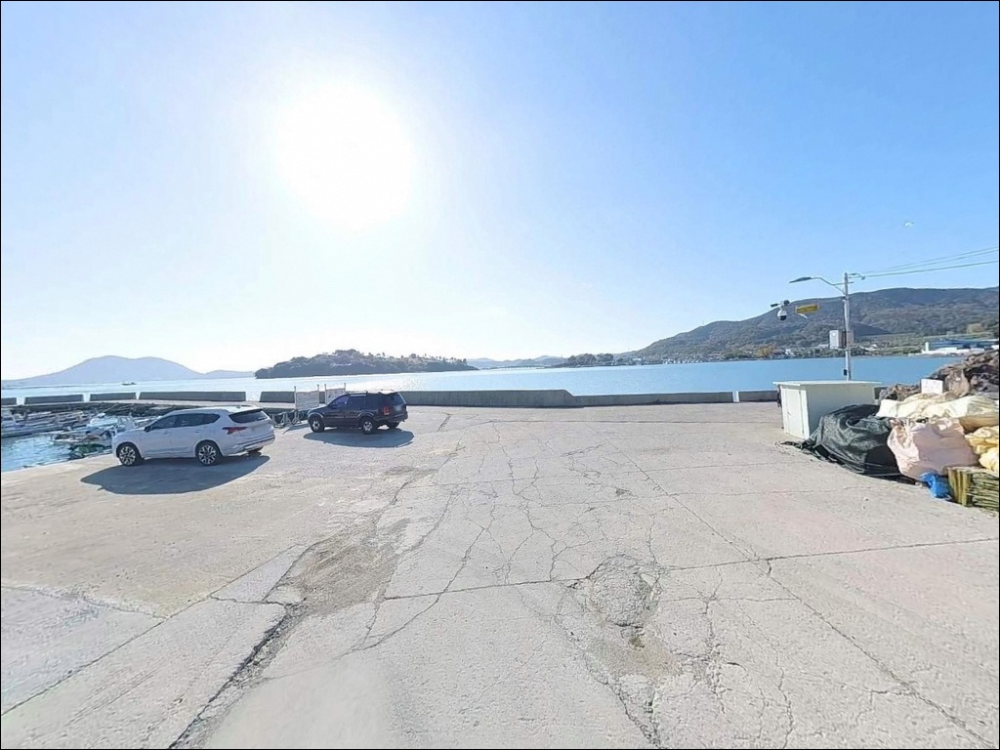
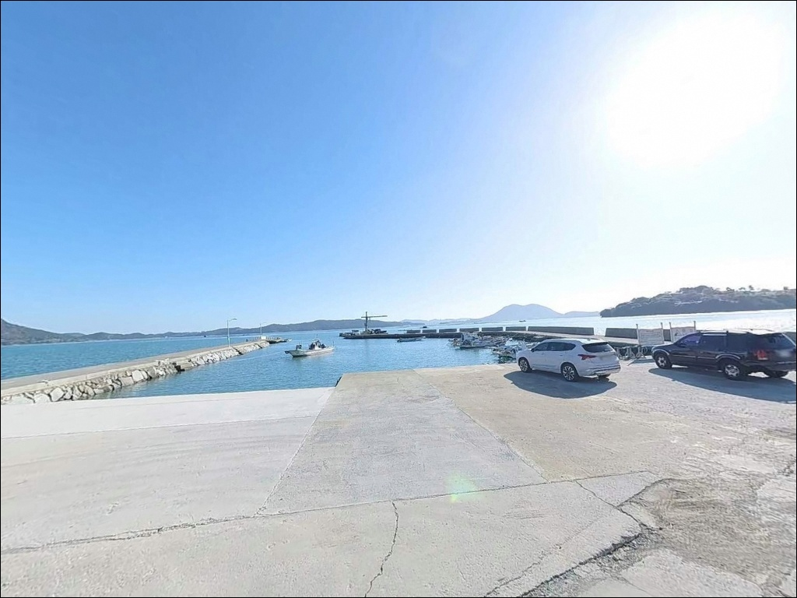
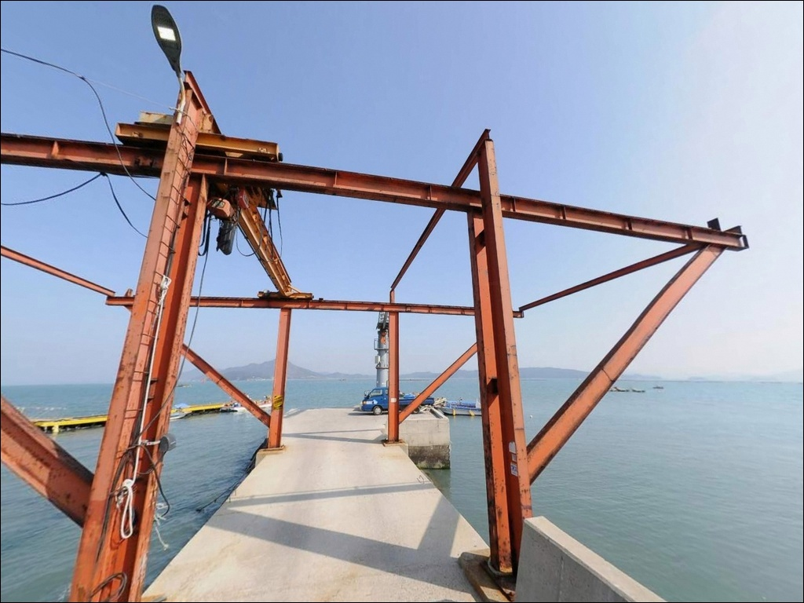
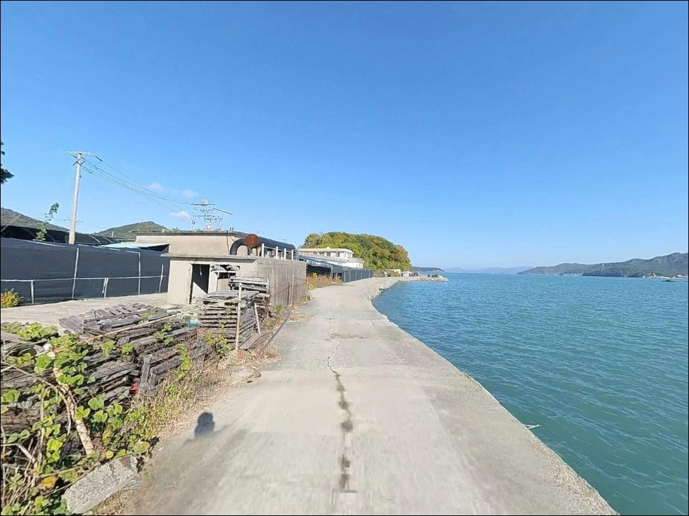

대야방파제, 전남 완도군 숨겨진 마을의 바다 차박 낚시 스팟 명당
이 페이지에는 광고(제휴 링크 포함)가 있으며, 광고 링크를 통해 구매하면 운영자가 판매 수익 또는 수수료를 받을 수 있습니다. 포인트 사진: 카카오맵 스카이뷰·로드뷰. 이 페이지의 지도·사진 이미지는 카카오맵의 실제 서비스 이미지와 다를 수 있습니다.


포인트 안내
대야방파제
전남 완도군 완도읍 대야리 640
완도 해역은 조류가 빠르기로 알려진 수역입니다.
물때 계산 없이 대야방파제를 찾으면
채비가 조류에 쓸려
원하는 자리를 제대로 공략하지 못하는
상황이 생깁니다.
정조 전후 타이밍이 이 포인트 낚시의 전제 조건이며,
출발 전 바다타임 확인이 먼저입니다.
전남 완도군 완도읍 대야리에 위치한
대야방파제는 완도 동측 해안에 자리한
소규모 방파제입니다.
인근 장좌리 방파제와 유사한 수역 조건을 공유하며,
한산하고 조용한 분위기가 알려진
로컬 감성의 포인트입니다.
이 글은 대야방파제의
진입 환경, 차박 여건, 낚시 지형 조건,
어울리는 낚시 스타일에 집중합니다.
조황 단정이나 특정 어종 보장은
이 글의 범위에 포함되지 않습니다.

1. 진입 동선과 포인트 접근성
완도읍 대야리는 완도읍 시가지에서
해안 방향으로 이어지는 마을 도로를 통해
접근하는 구조입니다.
대야리 일대는 농림지역과 민가가 혼재하는
전형적인 어촌 지형으로,
방파제까지 이어지는 진입로는
왕복 1차선 수준의 좁은 마을 도로입니다.
대형 SUV나 캠핑카 등 차폭이 넓은 차량이라면
출발 전 위성지도로 진입로를
반드시 확인하는 것이 좋습니다.
방파제 주변 회차 공간이 넉넉하지 않아
진입 전에 탈출 동선도 함께 점검하는 것이
기본 준비입니다.
주차는 방파제 초입 공터나
선착장 인근 평지를 이용하는 방식이 일반적입니다.
정식 주차장이 없는 소규모 방파제 구조상
어선 이동 동선을 막지 않는 자리가
우선입니다.

2. 차박 환경과 야간 체류 여건
대야리는 민가 밀집도가 낮은 소규모 어촌 마을입니다.
야간에는 차량 통행이 거의 없고,
주변 광원이 적어
프라이버시는 확보되는 환경이지만,
가로등 수가 많지 않으므로
개인 조명 장비는 반드시 챙겨야 합니다.
완도 동측 해안 특성상
바람 방향에 따라 파도 소음이 생길 수 있습니다.
방파제 주변 주차 공간이 협소해
차박을 메인 목적으로 삼기에는
공간 여건이 넉넉하지 않은 편입니다.
낚시 후 짧게 하룻밤 머무는 용도라면
승용차 1~2대 수준은 가능한 구조로 보입니다.
야간 낚시를 병행한다면
방파제 끝단에서 발판이 좁아지는 구간이 있으므로
구명조끼와 헤드랜턴은 기본 장비입니다.
기상 악화 시 즉시 철수할 수 있도록
출발 전 파고와 풍속 예보를
반드시 확인해 두어야 합니다.


3. 주변 편의시설 및 인프라 현황
대야방파제 반경 3km 이내에는
CU 완도은성점(완도읍 군내리 소재)이
확인됩니다.
그 외 식당, 마트, 주유소 등
주요 생활 인프라는
완도읍 시가지 방면으로 이동해야
이용이 가능합니다.
낚시 소품, 식수, 얼음은
완도읍 상권에서 미리 구입한 뒤
포인트로 이동하는 것이 현실적인 준비입니다.
반경 10km권에는
완도농협하나로마트와 완도읍 의료시설이
위치하고 있어
긴급 상황 발생 시 이동 경로를 미리 파악해
두는 것이 좋습니다.

4. 진입 전 반드시 챙겨야 할 준비사항
대야방파제 방문 전 가장 먼저 확인할 것은
물때입니다.
완도 해역은 조류 변화가 뚜렷한 수역으로,
사리 전후에는 채비가 조류에 쓸려
바닥층 공략 자체가 어려워집니다.
바다타임에서 대야리 기준 물때를 확인하고,
조금 전후 또는 정조 타이밍에 맞춰
출발 시각을 잡는 것이 기본 전략입니다.
소규모 방파제 특성상 밑걸림이 잦은 구간이 있어
여분 채비는 넉넉하게 준비하는 편이 좋습니다.
완도읍 상권에서 미리 소품을 보충하고
이동하는 동선이 효율적입니다.
마을 선착장 구조상 어선 조업이 이루어지므로
어선 이동 동선과 어구 주변에는
자리를 잡지 않는 것이 기본 매너입니다.
대야방파제는 완도 수로권 조류 영향권 안에 있어
물때 계산이 조과의 전제 조건입니다.

5. 대야방파제에서 낚시 성과가 달라지는 지형 조건
대야방파제는 완도읍 동측에 위치하며
완도 내해 수로 영향권에 들어 있는 구조입니다.
방파제 앞 50m권에 물골이 형성되는 구간이 있어
수심 변화 지점이 자연스럽게 만들어집니다.
이 물골 경계 구간이
원투 채비가 멈추기 좋은 자리입니다.
바닥은 펄과 모래가 혼재하는 저질로,
방파제 끝단으로 갈수록 수심이 깊어지는
전형적인 방파제 지형 패턴을 보입니다.
방파제 외항 쪽은 조류 영향을 직접 받아
회유성 어종의 이동 통로가 되는 편이며,
내항은 조류가 상대적으로 약해
찌낚시와 원투 탐색에 안정적인 조건을 만듭니다.
방파제 앞 수심 변화 구간은
원투 채비가 자연스럽게 멈추는 자리를 만들어
양태와 같은 바닥 어종이 붙기 좋은 환경입니다.
완도 내해라는 지형 특성상
시즌에 따라 감성돔, 볼락, 농어 등
다양한 어종의 접근을 기대해볼 수 있는 구조입니다.
출조 전에 대야방파제 및 완도읍 방파제 조황을
꼭 검색해 보시기 바랍니다.


6. 포인트에 어울리는 낚시 스타일
대야방파제에서 가장 어울리는 낚시 방식은
원투낚시입니다.
방파제 앞 50m권 물골 구간과
끝단 수심 변화 지점은
무거운 봉돌로 채비를 멀리 날려
바닥층을 탐색하는 방식에 잘 맞습니다.
양태, 도다리, 붕장어 등
바닥층 어종을 기대해볼 수 있는 구조입니다.
찌낚시도 이 포인트에서 의미 있는 선택입니다.
내항 또는 방파제 외항 경계 구간에서
감성돔을 노리는 방식으로,
물때가 느려지는 조금 전후 시간대에
집중도가 높아지는 편입니다.
야간에는 볼락 라이트게임이 효과적입니다.
방파제 주변 암초 경계 구간은
볼락이 서식하기 좋은 지형 조건을 갖추고 있어,
소형 지그헤드 채비로
방파제 발치를 천천히 탐색하는 방식이
잘 맞습니다.
농어 루어도 조류가 살아 있는 타이밍에
외항 쪽을 공략하면 반응을 기대해볼 수 있습니다.

7. 대안 포인트와 플랜 B 동선
대야방파제에서 자리 여건이 여의치 않거나
조류가 너무 강할 때는
장좌리 방파제가 첫 번째 대안입니다.
대야방파제에서 직선 거리 약 560m 수준으로
가장 가까운 대체 포인트이며,
동일 수역 조건을 공유하고 있어
물때 대응 전략도 그대로 활용됩니다.
완도읍 방향으로 이동하면
씨월드(노래하는 등대) 방파제가 있습니다.
완도읍 군내리 소재로 접근성이 좋고,
완도군이 관리하는 방파제 구조로
발판이 안정적인 편입니다.
주차 여건도 대야방파제보다 넉넉한 편이라
차박을 메인으로 계획한다면
이쪽을 기점으로 삼는 것이 현실적입니다.
반경 10km권의 완도항 방파제는
대형 방파제 구조로 수심이 깊고
발판이 편한 편입니다.
대야방파제를 처음 찾는 경우라면
완도읍 상권 이용과 낚시를 동시에
계획하기에 편리한 동선입니다.

한적함을 원하는 낚시꾼에게
대야방파제가 맞는 이유
원투낚시와 찌낚시를 즐기는 낚시인이라면
대야방파제의 지형 조건은
잘 맞는 구조입니다.
온라인 기록이 적어 한산하고,
물골 구간과 수심 변화 지점이
바닥층 어종을 노리기 좋은
포인트 구조를 갖추고 있습니다.
다만 물때 계산 없이 찾아가거나
진입로 사전 확인 없이
대형 차량으로 진입하면
현장에서 난감한 상황이 생길 수 있습니다.
물때 확인, 자급 준비, 진입로 점검,
이 세 가지를 갖추고 간다면
조용하고 기억에 남는 출조가 될 수 있는 곳입니다.
편의시설 없는 소규모 어촌 방파제에서
조류 소리와 함께 낚싯대를 펼치고
짧게 하룻밤 머무는 차박 여행자라면,
완도읍에서 충분히 자급 준비를 갖추고
낚시와 차박을 함께 즐기기 좋은
조용한 포인트입니다.